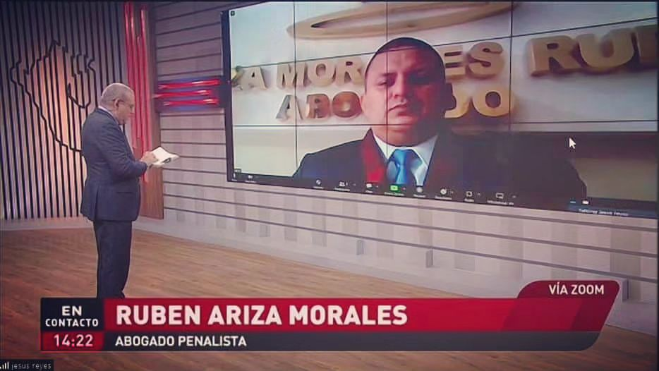
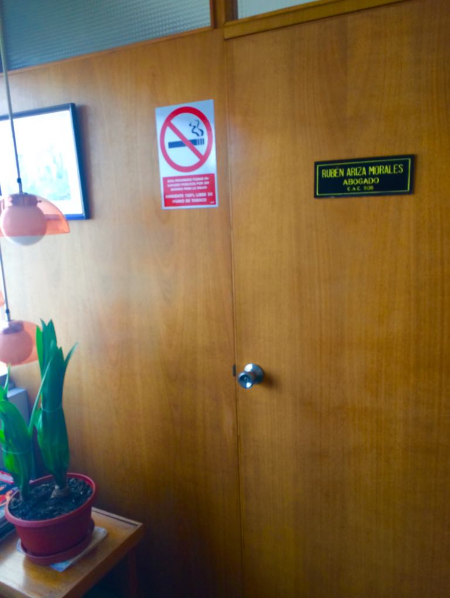
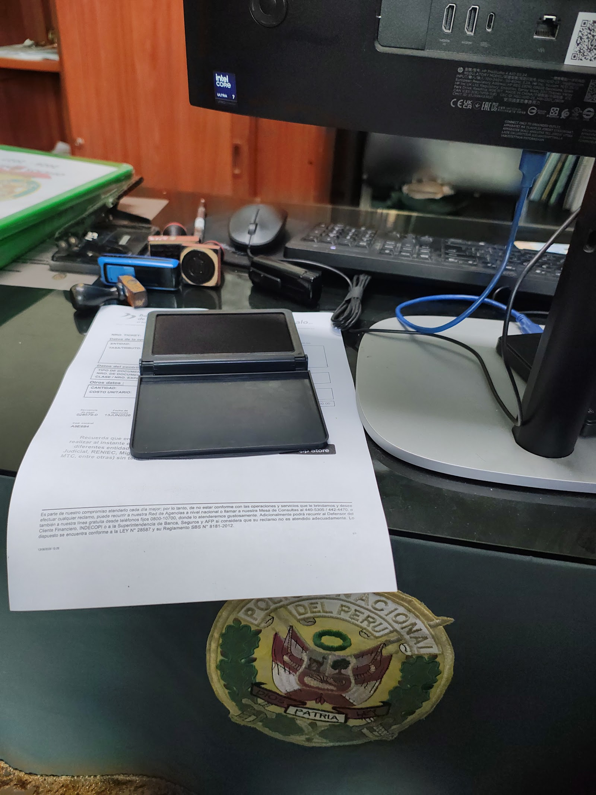

Estudio jurídico · La Molina
222 personas ya lo escribieron en Google, un canal de televisión lo llamó como experto y el Colegio de Abogados le dio un número. Esta página solo exhibe el expediente.
Ninguna la elegimos nosotros: cada una la nombra un cliente suyo en su reseña. Abre uno y el fólder se convierte en la ficha.
Un abogado que se describe a sí mismo no prueba nada. Aquí no hace falta: el expediente ya está escrito por otros.

El rótulo del programa dice, textual: «Rubén Ariza Morales · Abogado penalista». En vivo, vía Zoom.

Grabado en la placa de su puerta. Un número de colegiatura es, literalmente, un identificador verificable.

Un volumen que casi ningún estudio de la zona toca. Es un promedio, y está a un clic de comprobarse.
Textuales, con nombre, verificables en su ficha de Google.
«Tomaron el caso a la mitad porque otros abogados nos fallaron anteriormente.»
Alberto Daniel Palacios Orbegozo · Google · reseña verificable
«Excelente abogado en lo civil… ayudó a mi hermana menor a recuperar el cincuenta por ciento de su patrimonio, lo que era su derecho. Contrató el mejor bufete y ni así nos pudo ganar.»
Bruce Cárdenas · Google
«Excelente estudio jurídico en materia de recuperación de crédito, obligación de dar suma de dinero.»
Giselle Aquino Sudario · Google
«Excelente profesional en litigio de tierras.»
Kevin C. Torres · Google
C. Córcega 122, Ate — zona La Molina. Escriba por WhatsApp y explique la situación; de ahí se ve si hay caso y qué se puede hacer.